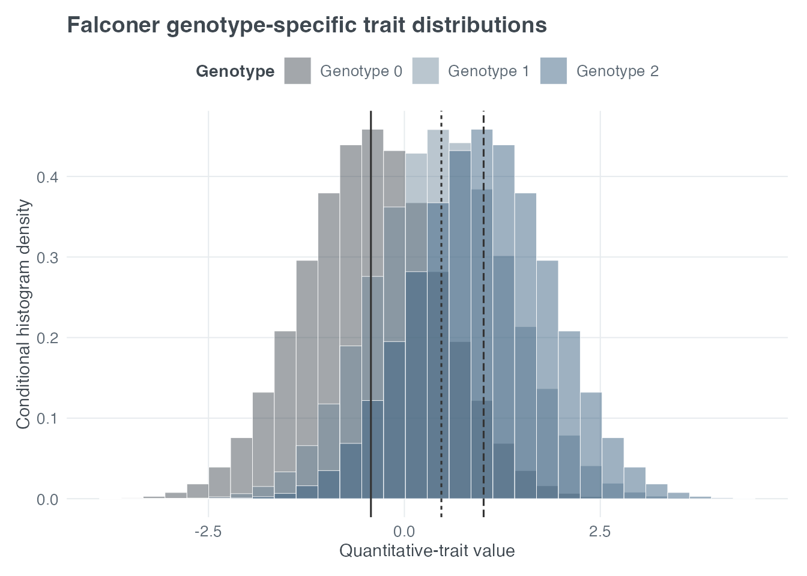
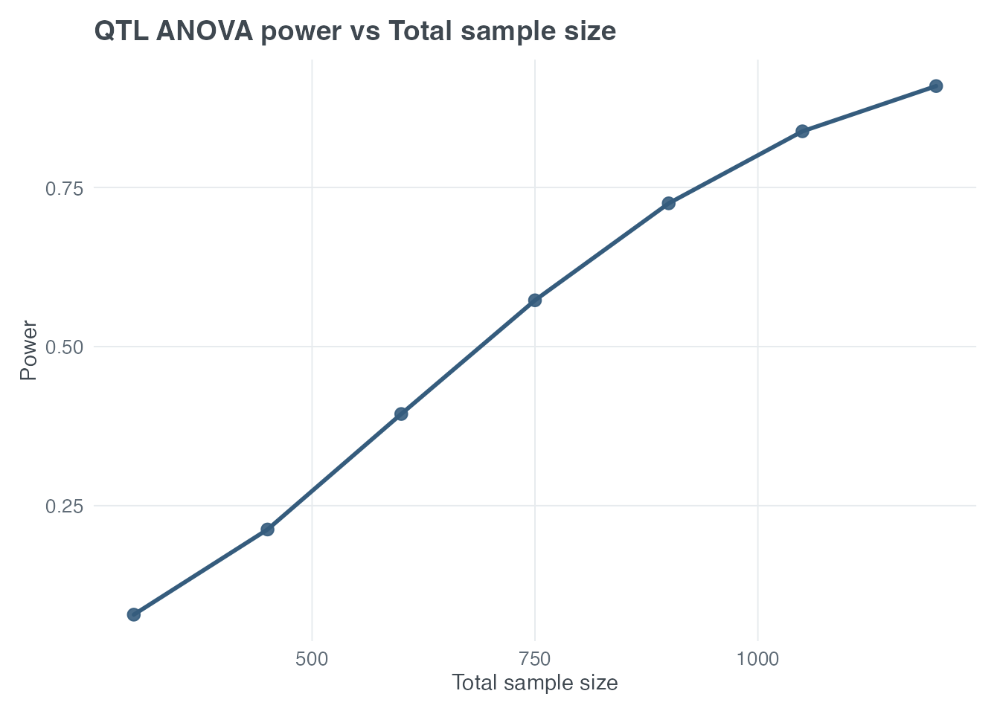
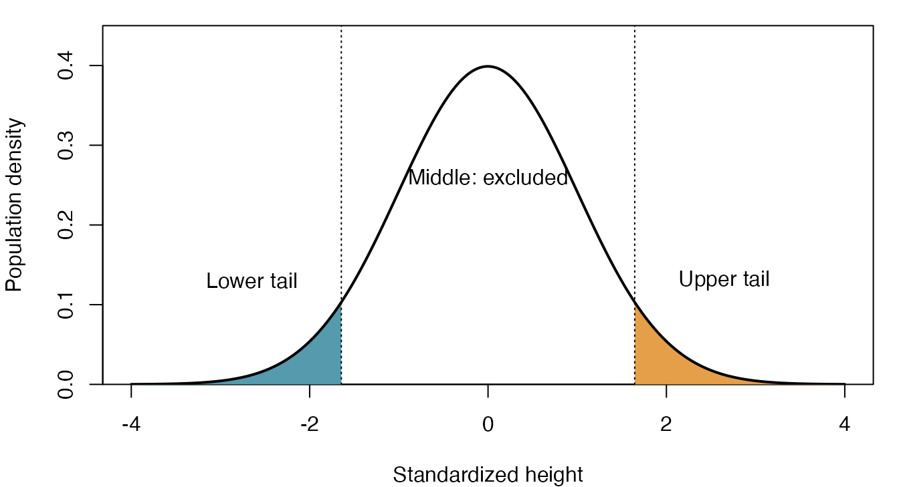
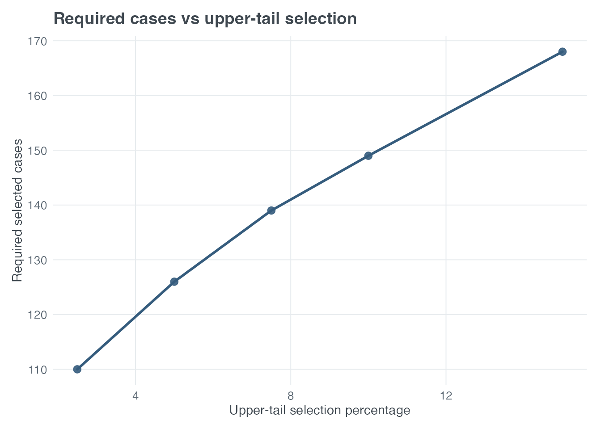
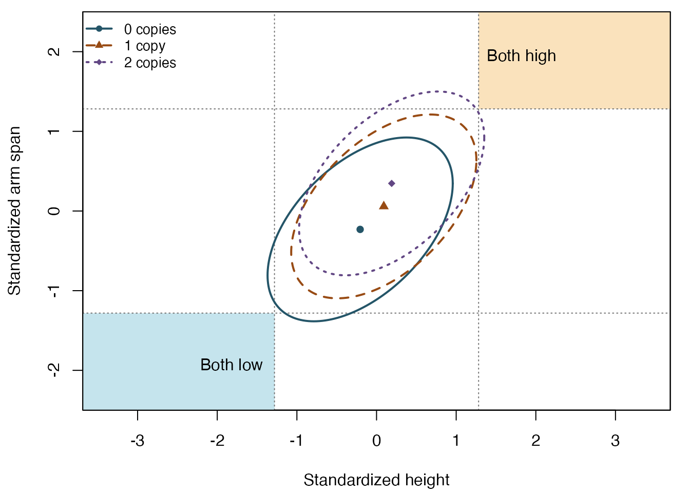

4. Quantitative-Trait Study Design
paweh package authors
Source:vignettes/paweh-04-quantitative-trait-study-design.Rmd
paweh-04-quantitative-trait-study-design.RmdHow many people would we need to detect a shift in height?
Suppose a growth study can measure adult height in a large cohort, but has a smaller budget for genotyping. A quantitative trait is a characteristic measured on a numerical scale. A quantitative trait locus (QTL) is a region of the genome whose variation contributes to differences in that measurement. At a variant with two alleles, a person’s genotype tells us whether they carry zero, one, or two copies of the allele we are studying.
Imagine that people with two copies are taller on average than people with zero copies. Plenty of people in the first group could still be shorter than people in the second. Can the study distinguish that shift in averages from the variation among people? Power is the probability of detecting the association in repeated studies if the assumed effect exists. We can either estimate power for the people we can recruit or calculate the minimum sample size needed (MSSN) for a target power.
The examples below consider three recruitment decisions. We can measure and genotype everyone, genotype people selected by unusually high or low measurements, or take several measurements per person and design a joint test. The most expensive step in the study matters when comparing these plans.
How much do the three genotype groups overlap?
Start with the means of the two homozygotes, people with zero and two copies. In the Falconer-style model their midpoint is and their means are and . The additive effect is half their difference. If each copy shifts the mean by the same amount, the heterozygote (one copy) sits at the midpoint. Dominance is the departure of its mean from that midpoint. The package calls this departure , so the one-copy mean is .
-
tauis the ratio . At zero, the three means are equally spaced. At 0.5, the heterozygote moves halfway from the midpoint to the two-copy mean. At 1 it coincides with that mean, and at −1 it coincides with the zero-copy mean. The functions accept finite numeric ratios, including values outside [−1, 1], which place the heterozygote beyond the two homozygote means. -
pdis the population frequency of the modeled allele, between zero and one, exclusive. Under Hardy–Weinberg proportions the three genotype frequencies are , , and . These weights determine how much each group contributes to population variation. -
qtl_varis the fraction of total trait variance explained by the differences between genotype means, also strictly between zero and one. The model centers the population mean at zero and scales total variance to one. Thusqtl_var = 0.025attributes 2.5% of population variance to the modeled locus. The remaining 0.975 is residual variance within genotype groups. It includes other sources of variation, such as other genes, environment and measurement error.
Given these three inputs, qtl_falconer_parameters()
derives the means and common within-group standard deviation. Gordon,
Finch, and Kim (2020, §6.1.1) give this parameterization using Fisher’s
variance decomposition as presented by Lynch and Walsh. To see the
overlap clearly, the figure first uses a larger QTL variance of 0.25 and
a dominance ratio of 0.25.
plot_qtl_genotype_distribution(
qtl_var = 0.25,
tau = 0.25,
pd = 0.25,
type = "binned",
scale = "density"
)
Deterministic genotype-specific quantitative-trait distributions under the Falconer model.
Read each color across the horizontal trait scale. The vertical markers show the three means. Even at this large effect size, all three groups can produce measurements near the middle. Each bar height is the probability of its interval under the genotype’s normal distribution divided by the bin width. These are deterministic model densities. This display gives each genotype its own density scale, so the relative numbers of people carrying each genotype cannot be read from the bar heights.
Measure everyone and compare means with ANOVA
A one-way analysis of variance (ANOVA) compares the spread between the three genotype means with the variation within groups. Its null hypothesis is that all three population means are equal. The test can detect departures that involve dominance because it compares three groups without requiring the means to follow a straight line. The power model assumes independent participants, a normal trait within each genotype, and a common residual variance. Expected group sizes follow the allele frequency.
Use the smaller 2.5% QTL from Gordon, Finch, and Kim (§6.1.4). The table explains the design choices in both calls.
| Input | Choice | Meaning |
|---|---|---|
N |
996 | Total people, each contributing one trait measurement and one genotype. |
alpha |
0.0001 | Probability of rejecting equal means under the null model. |
qtl_var, tau,
pd
|
0.025, 0.5, 0.15 | Variance fraction, dominance/additivity ratio and allele frequency, respectively. |
power |
0.80 | Desired chance of detecting the modeled shift when solving for sample size. |
count_method |
"rounded" |
Round each expected genotype count separately. The
alternative "expected" uses fractional counts for
planning. |
multiple_of_three |
TRUE |
Search total sample sizes in steps of three for MSSN.
With FALSE, search every eligible integer. |
The step of three reproduces the textbook search. Actual genotype
groups can have quite different sizes. At pd = 0.15, the
rounded counts at 996 are 720, 254 and 22. Separate rounding at other
sample sizes can give counts that sum to a value slightly different from
the supplied N. The F calculation uses two numerator
degrees of freedom and N - 3 denominator degrees of
freedom. First ask what 996 participants provide, then solve for the
size needed to reach 80%.
anova_power <- qtl_anova_power(
N = 996, alpha = 0.0001,
qtl_var = 0.025, tau = 0.5, pd = 0.15,
count_method = "rounded", verbose = FALSE
)
anova_mssn <- qtl_anova_mssn(
power = 0.80, alpha = 0.0001,
qtl_var = 0.025, tau = 0.5, pd = 0.15,
count_method = "rounded", multiple_of_three = TRUE,
verbose = FALSE
)| Design quantity | Value |
|---|---|
| Power at N = 996 | 0.80005 |
| Required total N | 996.00000 |
| Power at required N | 0.80005 |
The two routes agree. A study of 996 people has 80.005% power, and 996 is the first eligible total on this search grid to reach 80%. Those 996 participants are drawn across the full height distribution. Each participant counts once regardless of which genotype is observed.
If recruitment falls short, the power loss depends on where the study lies on the curve. Holding the model and significance threshold fixed gives the following seven prospective studies.
plot_qtl_anova_power(
x_var = "N",
x_values = seq(300, 1200, by = 150),
alpha = 0.0001,
qtl_var = 0.025,
tau = 0.5,
pd = 0.15
)
One-way genotype-group ANOVA power as total sample size increases.
At 900 participants the power is about 72.5%, while 1,050 gives about 83.8%. The gain from another 150 people becomes smaller toward the right of the plot. The continuous-trait calculation uses the height of every genotyped participant.
Measure broadly and genotype the extremes
Suppose height measurements are already available to the cohort and genotyping is expensive. We could screen the measurements and invite only the tallest and shortest people for genotyping. When genotype shifts the trait mean, the high and low groups can differ appreciably in genotype frequencies. This design tests that difference using a genotype chi-square test with two degrees of freedom. Li et al. (2019) examine extreme sampling under balanced and unbalanced designs. The numerical example here comes from Gordon, Finch, and Kim (§6.1.3).
There are three populations to keep track of. The source population supplies the distribution of measurements. The screened participants are those whose trait values we examine. The selected participants enter the genetic analysis. The package calls upper-tail participants cases and lower-tail participants controls. These labels indicate selection by height. People between the cutoffs enter neither group.
x_upper = 5 and x_lower = 5 are
percentages. The function converts them to standard
normal cutoffs with qnorm(1 - 5/100) and
qnorm(5/100). Entering 0.05 would request 0.05% in that
reference distribution. The source model is a mixture of three
genotype-specific normals. Its mean and variance are standardized, but
its actual tail probabilities can differ slightly from the reference
percentages.
The first call derives the boundaries and genotype frequencies within
each tail. The second asks about a budget for 126 upper-tail people, and
the third solves for the number needed to reach 80%. In both calls
k = 1 allocates one lower-tail participant per upper-tail
participant.
threshold_model <- qtl_falconer_threshold_parameters(
qtl_var = 0.025, tau = 0.5, pd = 0.15,
x_upper = 5, x_lower = 5,
verbose = FALSE
)
threshold_power <- qtl_threshold_chisq_power(
N_case = 126, alpha = 0.0001,
qtl_var = 0.025, tau = 0.5, pd = 0.15,
x_upper = 5, x_lower = 5, k = 1,
verbose = FALSE
)
threshold_mssn <- qtl_threshold_chisq_mssn(
power = 0.80, alpha = 0.0001,
qtl_var = 0.025, tau = 0.5, pd = 0.15,
x_upper = 5, x_lower = 5, k = 1,
verbose = FALSE
)| Design quantity | Value |
|---|---|
| Upper threshold | 1.64485 |
| Lower threshold | -1.64485 |
| Power with 126 selected cases | 0.80167 |
| Required selected cases | 126.00000 |
| Required selected controls | 126.00000 |
| Expected source population screened for cases | 2513.73811 |
| Expected source population screened for controls | 2526.18974 |
The thresholds are about −1.645 and +1.645 population standard deviations. With 126 selected per tail, or 252 people genotyped, power is 80.17%. The model predicts that about 39.7% of the upper group and 14.2% of the lower group will carry exactly one copy. This difference in genotype composition supplies evidence for the association.
The shaded areas show which people enter the calculation. The curve is the population mixture, weighted by the expected frequency of each genotype.

Source population for the 2.5% QTL design. Shading marks the two groups eligible for genotyping.
About 5.012% of screened people meet the upper cutoff and 4.988% meet the lower cutoff. Dividing 126 by each eligibility probability gives about 2,514 screened for the upper quota and 2,526 for the lower quota. When one cohort supplies both tails, the same measurement screens a person for both. The two numbers are separate expectations. The actual number screened until both quotas fill varies. Compared with ANOVA’s 996 genotypes, this plan saves genotyping while requiring more heights to be measured.
What if the upper criterion is relaxed while the lower criterion stays at 5%? The curve compares five choices with the same power target and equal selected group sizes.
plot_qtl_threshold_chisq_mssn(
x_var = "x_upper",
x_values = c(2.5, 5, 7.5, 10, 15),
sample_size = "case",
power = 0.80,
alpha = 0.0001,
qtl_var = 0.025,
tau = 0.5,
pd = 0.15,
x_lower = 5,
k = 1,
title = "Required cases vs upper-tail selection"
)
Required selected cases as upper-tail sampling becomes less extreme, with the lower tail fixed at 5%.
Moving the upper cutoff from 2.5% to 15% increases the required number in each selected group from 110 to 168. The wider upper tail makes eligible people easier to find, but its genotype frequencies are closer to those of the lower group. The vertical axis counts selected upper-tail people. Budget the screening step from each design’s own selection probabilities.
Two measurements on the same person
A growth-related variant might shift both adult height and arm span. One locus influencing several traits is pleiotropy. In a study with locus heterogeneity, several loci can each contribute to a similar phenotype in different people. Here we follow one locus across two measurements on the same people.
For multiple traits, give one qtl_var and one
tau per trait, in the same order as the rows and columns of
cor_matrix. The allele frequency pd is shared
because each participant has one genotype at this locus. Height and arm
span may also vary together within any one genotype. For example, growth
conditions could influence both. The implementation uses
cor_matrix for this within-genotype, or residual,
correlation. It multiplies each entry by the two residual
standard deviations to obtain the common within-genotype covariance
matrix. Supply a symmetric, positive-definite correlation matrix with
ones on its diagonal.
Pooling genotypes adds another source of covariance when both trait
means change with allele count. Even diag(2), which sets
the residual correlation to zero, can therefore give correlated traits
in the full cohort. For planning, distinguish correlations estimated
within genotype groups from a single correlation estimated in the whole
population.
Use both continuous traits in a joint test
Separate ANOVAs ask whether the genotype means differ for each trait in turn. A multivariate analysis of variance (MANOVA) asks one question about the pair of means. Does any genotype have a different mean profile for height and arm span? Pillai’s trace measures the separation among those profiles along combinations of the traits, relative to the variation of people around their genotype means. Two highly correlated measurements may contribute little additional information about a common shift, while a shift across a direction with little residual variation can be easier to detect. A significant joint test alone does not identify which trait drives the association.
The design assumes independent people and multivariate normal measurements within each genotype with a common covariance matrix. In the calculation of Gordon et al., each informative direction contributes to the population trace, where measures between-group variation relative to within-group variation in that direction. The function combines the trace, total sample size and degrees of freedom in a noncentral F power calculation. Its power advantage over a univariate test depends on the effect profile and covariance.
Reproduce the 326-person design of Gordon et al.
Gordon et al. (published online in 2017, pp. 205–206) give a two-trait example with a 5% allele frequency. The QTL explains 10% and 5% of the respective trait variances. Trait 1 has equally spaced means, while trait 2 has a heterozygote shift of half its additive effect. The identity matrix specifies zero residual correlation. Use the full measurements on everyone, target 80% power, and set the significance level to .
gordon_mv <- qtl_multivariate_mssn_full(
power = 0.80,
alpha = 5e-8,
qtl_var = c(0.10, 0.05),
tau = c(0, 0.50),
pd = 0.05,
cor_matrix = diag(2),
test = "pillai",
verbose = FALSE
)
stopifnot(gordon_mv$N == 326L)| Design quantity | Value |
|---|---|
| Published integer MSSN | 326.0000 |
| paweh integer MSSN | 326.0000 |
| Historical fractional MSSN | 325.5057 |
The publication reports 326 people. The package’s historical fractional solution is 325.5057. Recruitment requires whole people, and the function searches for the first integer whose power reaches the target. Use the companion power function to check what the returned design achieves.
gordon_mv_power <- qtl_multivariate_power_full(
N = gordon_mv$N,
alpha = 5e-8,
qtl_var = c(0.10, 0.05),
tau = c(0, 0.50),
pd = 0.05,
cor_matrix = diag(2),
test = "pillai",
verbose = FALSE
)
gordon_mv_power$power
#> [1] 0.8014862At 326 participants, power is 80.15%. Thus a study
repeated under these assumptions would detect the modeled difference in
about four out of five repetitions. This published calculation uses
expected genotype frequencies. At pd = 0.05 only
two-copy participants are expected. A realized cohort can lack this
genotype entirely, which matters if the intended analysis requires all
three groups. Yang et al. (2010) discuss another approach to multiple
phenotypes that combines trait-specific tests. Their work provides
context for the choice of test.
Genotype people who are extreme on both measurements
Suppose both measurements are inexpensive and the budget covers genotyping a subset. We now want a group with both unusually high height and unusually high arm span, and a second group low on both. A person high on one trait and average or low on the other belongs to neither group. This design tests genotype frequencies across two selected groups.
For a new illustration, take an allele frequency of 0.40, QTL
variances of 2.5% and 4%, and dominance ratios of 0.5 and 0, in
height–arm span order. The residual correlation is 0.5 within every
genotype. Each of the two upper cutoffs is the 90th standard normal
percentile and each lower cutoff is the 10th. Seek equal numbers in the
two joint tails (k = 1) for 80% power at 0.0001. The first
call solves for the quota in each tail. The second checks power at that
upper-tail quota using exactly the same assumptions.
joint_inputs <- list(
qtl_var = c(0.025, 0.04), tau = c(0.5, 0), pd = 0.40,
cor_matrix = matrix(c(1, 0.5, 0.5, 1), nrow = 2),
test = "threshold_chisq", x_upper = c(10, 10), x_lower = c(10, 10),
k = 1, alpha = 0.0001, verbose = FALSE
)
joint_size <- do.call(qtl_multivariate_mssn_full,
c(list(power = 0.80), joint_inputs))
joint_power <- do.call(qtl_multivariate_power_full,
c(list(N_case = joint_size$N_case), joint_inputs))The eligibility percentages below use both measurements on each person. The screening column divides each selected quota by its own eligibility probability.
| Joint tail | Eligible (%) | Selected people | Expected screened |
|---|---|---|---|
| Both high | 3.322 | 73 | 2197.7 |
| Both low | 3.330 | 73 | 2192.0 |
73 people per tail (146 genotyped) give 80.56% power. About 3.32% qualify for the upper group and 3.33% for the lower group. Expect to screen about 2,198 for the upper quota and 2,192 for the lower quota. A single screening cohort contributes to both. Multiplying 10% by 10% would miss the correlation and the genotype mixture in this example.
The picture shows how correlation and genotype shifts shape this selection. Each outline encloses the central 50% of one genotype’s modeled bivariate distribution. The corner colors show the joint selection rule applied to the entire cohort.

Height and arm span on standardized scales. The centers are genotype means and the tilted ellipses show within-genotype variation.
Within a genotype, people taller than their group mean tend also to have longer arm span. Across genotypes, the centers move as well. A person at (+2, −2) misses both joint groups despite two individually extreme values. A person at (+2, +2) qualifies for the upper group. The outlines show only the central half of each group: all three distributions extend into both shaded corners.
Advanced detail: computing the chance of eligibility
For each genotype, the program integrates its multivariate normal density over each selected corner. Weighting the three probabilities by genotype frequency gives the fraction eligible from the source population. Conditioning on eligibility then gives the genotype frequencies used in the chi-square power calculation. This implements the joint probabilities in Gordon, Finch, and Kim (§6.2.2–6.2.3) directly. The textbook also discusses a product approximation for weak correlation and small QTL effects (Eq. 6.15).
With one dimension, an ordinary normal cumulative probability
suffices. For 2–20 traits, mvtnorm uses the deterministic
integration method of Miwa, Hayter, and Kuriki. With more than 20
traits, the package switches to randomized Genz–Bretz integration with a
fixed local seed and restores the caller’s random-number state. Both
multivariate procedures are numerical approximations. For an advanced
design, inspect joint_size$thresholds$integration for the
algorithm, completion message and any available error estimate for each
genotype and tail. These integration settings apply to the threshold
calculation. The continuous Pillai calculation uses mean and covariance
matrices directly.
Choose a recruitment plan
| Available measurements and budget | Calculation | Count to budget |
|---|---|---|
| One continuous trait and a genotype on everyone |
qtl_anova_power() or
qtl_anova_mssn()
|
Total participants with both measurements. |
| One trait screened broadly, genotyping concentrated at the extremes |
qtl_threshold_chisq_power() or
qtl_threshold_chisq_mssn()
|
Genotyped people in each tail, plus the larger pool to screen. |
| Several continuous traits and a genotype on everyone |
qtl_multivariate_*_full() with
test = "pillai"
|
Total people with a complete trait profile and genotype. |
| Several traits screened broadly, with all upper or all lower criteria required |
qtl_multivariate_*_full() with
test = "threshold_chisq"
|
Selected people per joint tail and the screening effort to fill both quotas. |
For example, the 996-person and 252-person designs use the same single-trait model and cutoff for statistical significance. The first buys a genotype for everyone measured. The second buys 252 genotypes and needs access to measurements from roughly 2,500 people. That distinction determines which plan fits a given cohort and budget.
Methods and references
Gordon, Finch, and Kim’s Chapter 6, Threshold-Selected Quantitative Trait Loci and Pleiotropy, gives the univariate examples (§§6.1.3–6.1.4) and the multiple-trait mixture and thresholds (§6.2). Its worked multivariate example in §6.2.4 has different parameters from the paper’s 326-person Pillai example. The joint-tail design and drawings in this tutorial are illustrations.
Fisher RA (1918). The correlation between relatives on the supposition of Mendelian inheritance. Transactions of the Royal Society of Edinburgh 52, 399–433. https://doi.org/10.1017/S0080456800012163.
Lynch M, Walsh B (1998). Genetics and Analysis of Quantitative Traits. Sinauer Associates.
Falconer DS, Mackay TFC (1996). Introduction to Quantitative Genetics. 4th edition. Longman.
Gordon D, Finch SJ, Kim W (2020). Heterogeneity in Statistical Genetics: How to Assess, Address, and Account for Mixtures in Association Studies. Springer. https://doi.org/10.1007/978-3-030-61121-7.
Miwa T, Hayter AJ, Kuriki S (2003). The evaluation of general non-centred orthant probabilities. Journal of the Royal Statistical Society, Series B 65, 223–234. https://doi.org/10.1111/1467-9868.00382.
Genz A, Bretz F. Computation of Multivariate Normal and t Probabilities. Springer; 2009. https://doi.org/10.1007/978-3-642-01689-9.
Gordon D, Londono D, Patel P, Kim W, Finch SJ, Heiman GA. An analytic solution to the computation of power and sample size for genetic association studies under a pleiotropic mode of inheritance. Human Heredity. 81(4), 194–209 (2016 issue, published online 2017). https://doi.org/10.1159/000457135.
Li Y, Levran O, Kim J, Zhang T, Chen X, Suo C. Extreme sampling design in genetic association mapping of quantitative trait loci using balanced and unbalanced case-control samples. Scientific Reports. 2019;9:15504. https://doi.org/10.1038/s41598-019-51790-w.
Pillai KCS. Some new test criteria in multivariate analysis. Annals of Mathematical Statistics. 1955;26(1):117–121. https://doi.org/10.1214/aoms/1177728599.
Yang Q, Wu H, Guo CY, Fox CS. Analyze multivariate phenotypes in genetic association studies by combining univariate association tests. Genetic Epidemiology. 2010;34(5):444–454. https://doi.org/10.1002/gepi.20497.
Session information
sessionInfo()
#> R version 4.6.1 (2026-06-24)
#> Platform: aarch64-apple-darwin23
#> Running under: macOS Tahoe 26.6.2
#>
#> Matrix products: default
#> BLAS: /Library/Frameworks/R.framework/Versions/4.6/Resources/lib/libRblas.0.dylib
#> LAPACK: /Library/Frameworks/R.framework/Versions/4.6/Resources/lib/libRlapack.dylib; LAPACK version 3.12.1
#>
#> locale:
#> [1] C.UTF-8/C.UTF-8/C.UTF-8/C/C.UTF-8/C.UTF-8
#>
#> time zone: America/New_York
#> tzcode source: internal
#>
#> attached base packages:
#> [1] stats graphics grDevices utils datasets methods base
#>
#> other attached packages:
#> [1] paweh_0.99.0
#>
#> loaded via a namespace (and not attached):
#> [1] gtable_0.3.6 jsonlite_2.0.0 dplyr_1.2.1 compiler_4.6.1
#> [5] tidyselect_1.2.1 dichromat_2.0-1 jquerylib_0.1.4 systemfonts_1.3.2
#> [9] scales_1.4.0 textshaping_1.0.5 yaml_2.3.12 fastmap_1.2.0
#> [13] ggplot2_4.0.3 R6_2.6.1 labeling_0.4.3 generics_0.1.4
#> [17] knitr_1.51 htmlwidgets_1.6.4 tibble_3.3.1 desc_1.4.3
#> [21] bslib_0.12.0 pillar_1.11.1 RColorBrewer_1.1-3 rlang_1.3.0
#> [25] cachem_1.1.0 xfun_0.60 fs_2.1.0 sass_0.4.10
#> [29] S7_0.2.2 otel_0.2.0 cli_3.6.6 withr_3.0.3
#> [33] pkgdown_2.2.1 magrittr_2.0.5 digest_0.6.39 grid_4.6.1
#> [37] mvtnorm_1.4-2 lifecycle_1.0.5 vctrs_0.7.3 evaluate_1.0.5
#> [41] glue_1.8.1 farver_2.1.2 ragg_1.5.2 rmarkdown_2.31
#> [45] tools_4.6.1 pkgconfig_2.0.3 htmltools_0.5.9